0.16 · Model-aware manual meshing and persistent guidance
The manual canvas shows SI geometry, domain extent and refinement references. Import boundaries explicitly, fit the model or domain, and assign editable regions. Guided steps retain the canvas; settings open inside the main-window inspector.
0.15 · Physics, PIMPLE, mesh/fields/export: fixed parent and summary routes
Single-click either the branch or summary to open persistent settings. Apply stays visible, model and PIMPLE edits generate actual dictionaries, and result actions enable after genuine data loads.
Usage, two engineer rounds and three fresh four-rank solves
0.14 · Manual topology: nodes, curves and regions
Preprocessing → Manual topology. Draw lines and arcs, split at points, erase individual segments, and assign independent closed regions. Compiles actual blockMesh or Gmsh meshes with shared-edge constraints.
Complete manual topology instructions and fresh measured tests
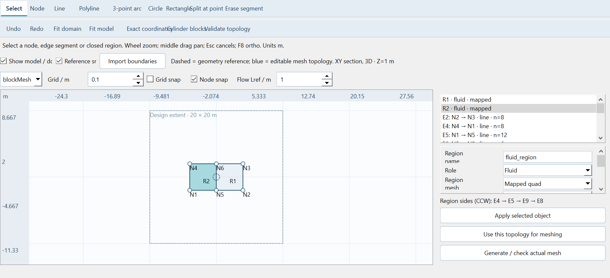
0.13 · Generator and refinement: two engineer rounds
Single-click Generator or Refinement under Mesh operations. The app switches to Preprocessing → Meshing and raises the corresponding editable property page. Heading, page tabs and feedback stay visible while the form scrolls. Apply saves the inputs; Generate/check runs the actual backend. Full settings/spacing dialogs preserve the original tools.
Two-round evidence and exact usage
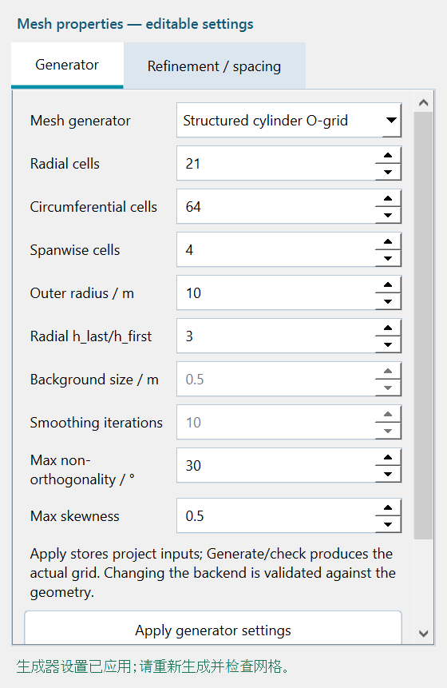
01 · The workbench
OpenFOAM Friend is a working Windows desktop research application by zongxuan and hanwen. It connects to an explicitly configured WSL installation of OpenFOAM Foundation 14. Geometry, meshing, queued MPI solves and result export share a reproducible project and actual case files.
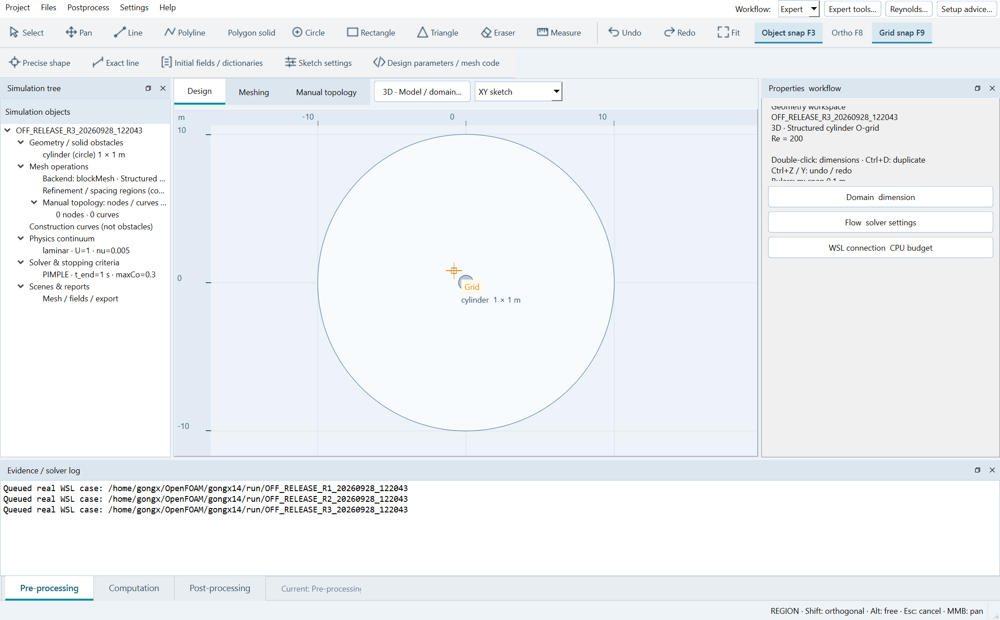
02 · Installation and another computer
- Keep the timestamped version folder beside
runtime. On a new PC install 64-bit Python 3.12, Windows WSL and OpenFOAM Foundation 14 in a Linux distribution. The ZIP contains source and evidence, not a copy of your Linux distribution. - Open PowerShell in the version folder and run the installer below. It creates a local Python environment and downloads the dependencies.
- Double-click
OpenFOAM Friend.cmdat the package root, orlaunch.cmdinside the version. - Choose WSL connection & CPU budget. Set the distribution name, actual OpenFOAM bashrc, your Linux run directory, CPU budget and poll interval. Press OK and inspect WSL PROBE in the evidence log. Do not copy the tested host username to a different computer.
powershell -NoProfile -ExecutionPolicy Bypass -File .\install.ps1 # Inspect Linux distribution names wsl --list --verbose # Example only: replace Ubuntu and the Linux username on another PC wsl -d Ubuntu -- bash -lc "source /opt/openfoam14/etc/bashrc; command -v foamRun; foamRun -help"
| Profile field | Meaning |
|---|---|
| distro | Exact installed WSL distribution name, e.g. Ubuntu. |
| bashrc | Full Linux path to Foundation 14 environment script. |
| run_dir | Absolute Linux path, e.g. /home/yourname/OpenFOAM/yourname14/run. The GUI opens its \wsl.localhost path. |
| max_cores | Total CPU reservation budget across this workbench queue. Paused cases keep their reservation. |
| poll_seconds | Polling interval in seconds; 10 for interactive tests, 30–60 for larger jobs. |
Machine profile: %APPDATA%\OpenFoamFriend\profile.json. Projects are portable *.off.json; queue DB and existing case paths belong to the original host. On another PC start a fresh queue rather than copying data/jobs.sqlite. Windows-generated scripts use local-drive WSL /mnt paths. An actual second-PC installation has not been tested in this delivery.
New in 0.3 · Language, mesh assistant and readable case code
Settings → Language / 语言 → English or 中文 switches the main interface immediately and persists the choice in %APPDATA%/OpenFoamFriend/ui.json. Close and reopen any existing dialog to apply the new language there. OpenFOAM dictionary keys, physical units and canonical project values remain unchanged.
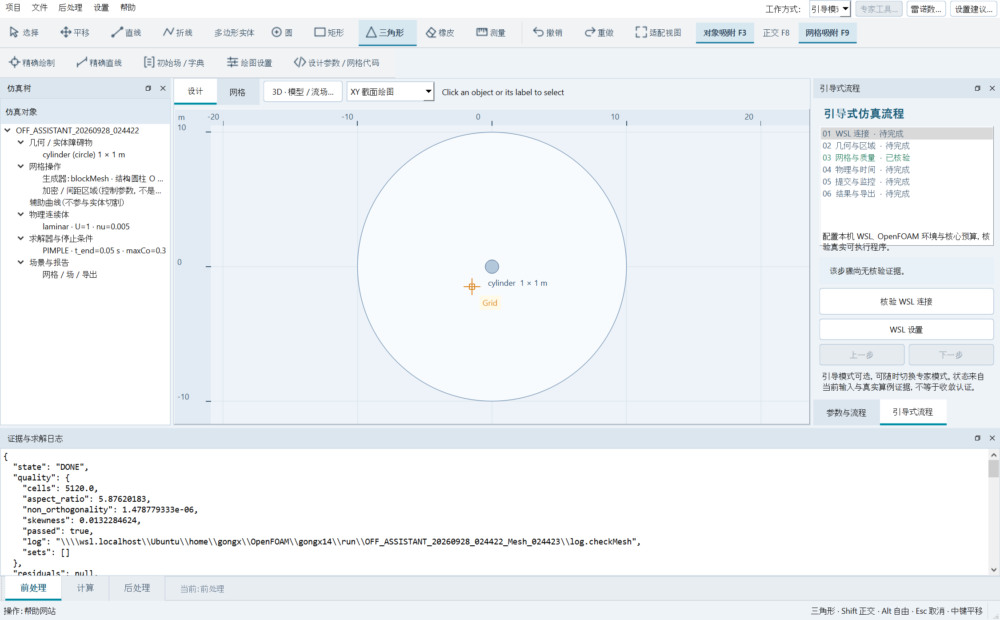
A guided automatic mesh workflow
- Draw the geometry, then choose Auto mesh assistant. Confirm 2D/3D and the method: a single circle recommends a cylinder O-grid; general planar obstacles recommend Gmsh triangles/prisms; an empty box can use conformal partitioned blocks.
- Choose Quick preview, Balanced or Fine, then adjust actual counts and sizes. O-grid cell count is Nr × Nθ × Nz (Nz=1 for 2D); presets are 5120, 20480 and 81920 in four-layer 3D. The displayed estimate for Gmsh is intentionally not an exact cell count.
- For Gmsh, optional near-body and downstream wake rectangles provide smoothly blended size fields. The assistant clips them to the rectangular domain and retains manual regions. The wake direction is x+; ratio controls end/start target size. For O-grid these local controls are disabled: that method supports radial grading, not a Cartesian wake strip.
- Set explicit skewness and non-orthogonality limits. Generate and check real preview creates a unique mesh-only WSL case, runs the converter and checkMesh, then opens the real mesh. A failed quality gate stays failed; thresholds are never relaxed automatically. Apply settings only saves design settings without generating a case.
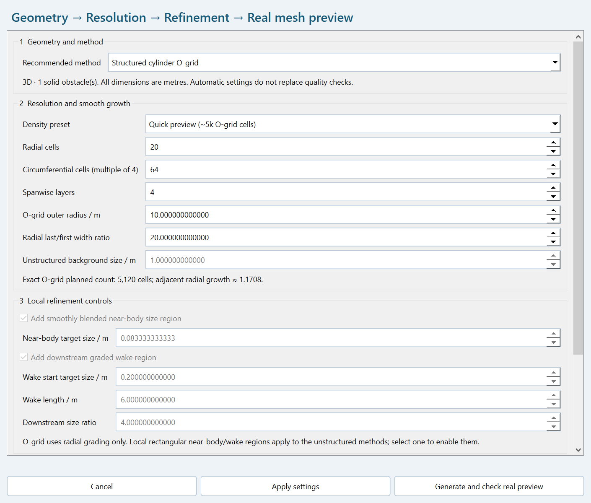
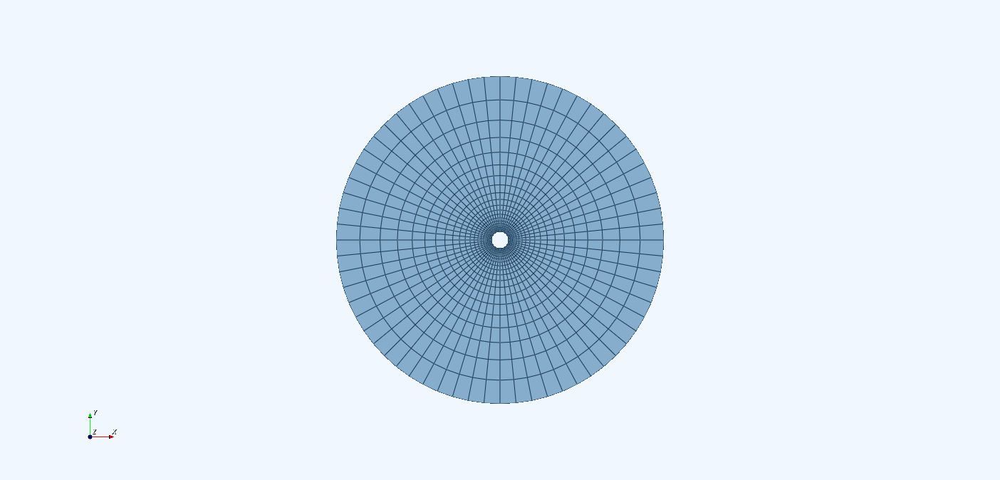
More precise drawing controls
Precise shape creates circle/rectangle/triangle objects with numeric SI dimensions. Double-click a canvas object to edit it. Sketch settings selects ruler units m/cm/mm and snap spacing in metres (0 disables snapping). These settings only change the displayed ruler and snapping, not the physical project units. Select supports a selection box; Ctrl+Z undo, Ctrl+Y redo, Ctrl+D duplicate, Delete removes selected objects, Esc returns to selection. Right-click offers edit/duplicate/delete. Measure provides a live segment preview.
A readable editor for the actual dictionaries
Actual dictionaries opens a grouped system/constant/0 file tree, line-numbered non-wrapping code with syntax colours, search, token-preserving indentation and a parameter reference panel. Format changes whitespace while asserting the exact token sequence is retained. Structure check only validates balanced delimiters and the FoamFile header; it is not a complete OpenFOAM parser. Save current file rechecks that the case is DONE/FAILED/CANCELLED, writes a timestamped backup, then atomically replaces that file. Queued and active cases stay read-only.
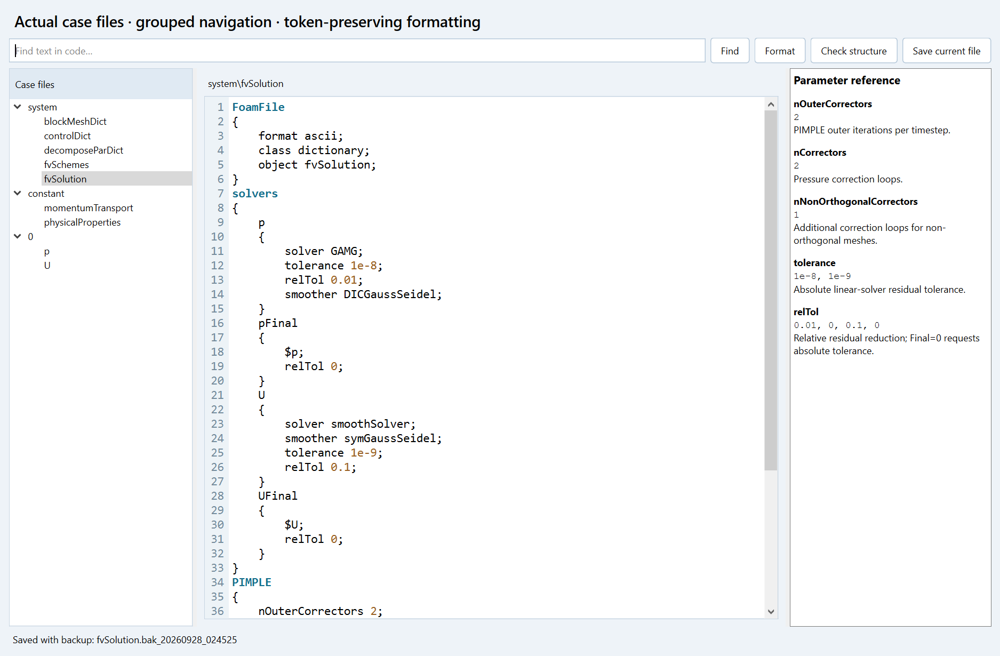
Polling now batches live status inside Linux rather than reading hot solver/state files through Windows UNC. Completed-job log summaries are cached. The actual dictionaries and results remain in the WSL case folder. Help → Website support opens spaceaero.space.
| Upgrade check | Measured result |
|---|---|
| Runtime Chinese/English switch | PASS |
| Canonical values retained | PASS |
| Draw, undo, redo, duplicate, delete | PASS |
| Formatted fvSolution read by actual foamDictionary | PIMPLE/nOuterCorrectors = 2 |
| Guided O-grid preview | 5120.0 cells · DONE |
| Assisted Gmsh near/wake mesh | 3236.0 cells · max skew 0.428677 · max angle 22.557247° · limits 0.5 / 30° · DONE |
0.3 · Contextual workspaces and optional guided simulation
The previous global sketch toolbar appeared over every page because it belonged to the main window. This release uses context: Geometry exposes sketch/edit/mesh preparation; Scenes exposes fit/quality/image controls and the real VTK field/time controls; Run Queue exposes refresh, connection and case-code controls. Drawing actions are hidden and disabled outside Geometry. The inspector follows the same context; exports are enabled only for a loaded Scene.
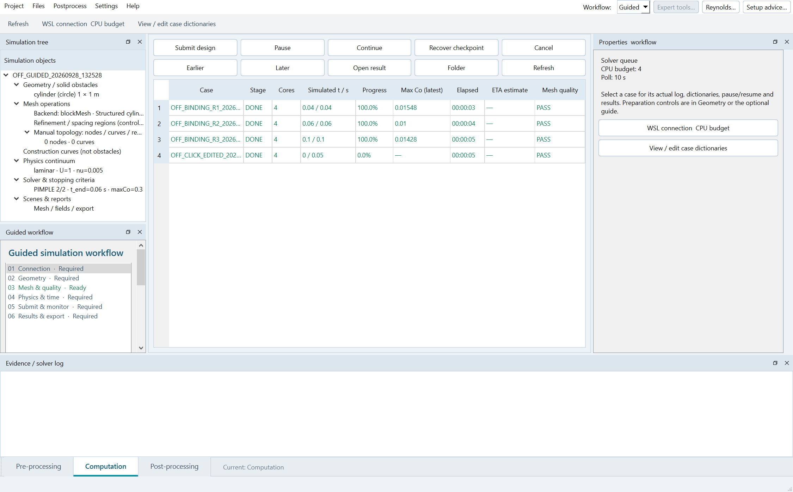
The current Simulation Tree has Geometry / solid obstacles, one Mesh operations branch containing backend and refinement controls, Construction curves, Physics continuum, Solver / stopping criteria and Scenes / reports. Double-click objects for dimensions, the physics branch for solver settings, and other branches to navigate. New/open project returns to Geometry. The underlying solver is still OpenFOAM, not STAR-CCM+.
Enable or disable the guide
Settings → Guided workflow shows or hides the optional guide; the choice is saved alongside the language preference. Expert mode is the same application with the guide hidden. The guide is a dock, not a blocking wizard: other workspaces remain accessible. Close its dock or uncheck the menu to return to expert mode. Reset workspace layout restores dock positions without replacing the project.
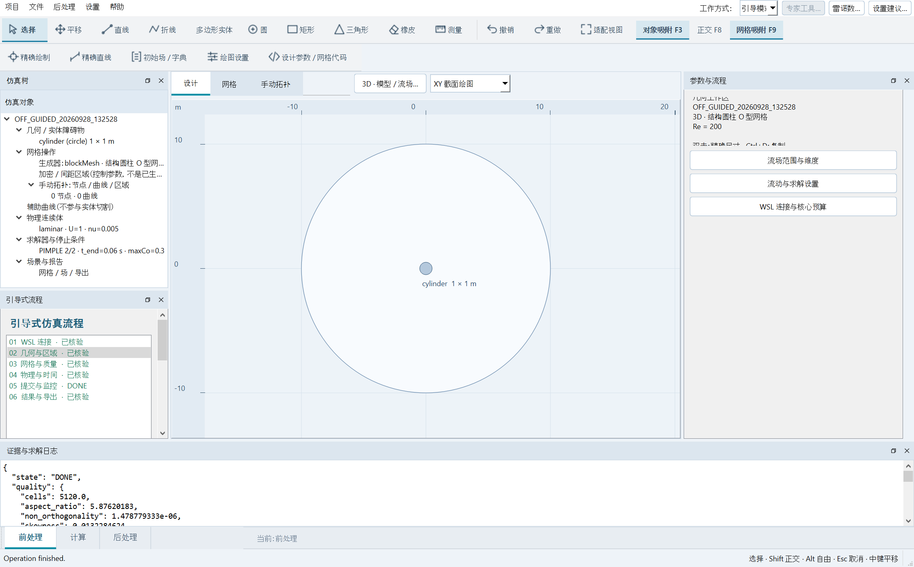
| Step | Action | What qualifies as ready |
|---|---|---|
| 01 | WSL connection | A genuine successful executable probe for the current distro/bashrc/run directory. |
| 02 | Geometry review | Explicit input review; domain/shape validation. A change to geometry invalidates the review. |
| 03 | Mesh and quality | Latest matching mesh settings in an actual DONE case, with checkMesh passed. Failed or in-progress meshes cannot qualify. |
| 04 | Physics and time | Explicit validation of the current flow/time/output/core inputs. Changing these settings invalidates the review. |
| 05 | Submission / monitor | Guide submission stays disabled until steps 01–04 are ready. The button submits a real design snapshot; if a matching solve exists, it opens that case instead. |
| 06 | Result / export | Matching non-mesh-only case is DONE and the measured simulation time reaches its requested end. Open actual fields, then select exports. |
Matching uses SHA-256 of canonical project inputs, not file names. Mesh matching includes geometry, regions, topology, resolutions, smoothing and quality limits; solver matching also includes flow and time settings. A velocity/viscosity change retains applicable mesh evidence but invalidates the physics review and solution match. Renaming a case does not change its physics. Reviews are session-specific; switching the guide off and on in that session retains them. This gate belongs to the guide; expert queue controls remain available. Input review and short DONE cases are not physical-convergence claims.
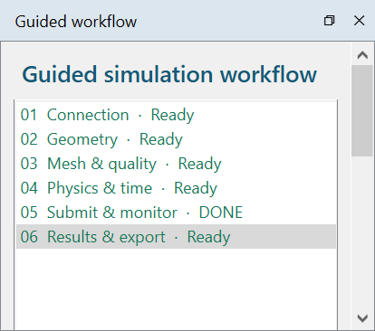
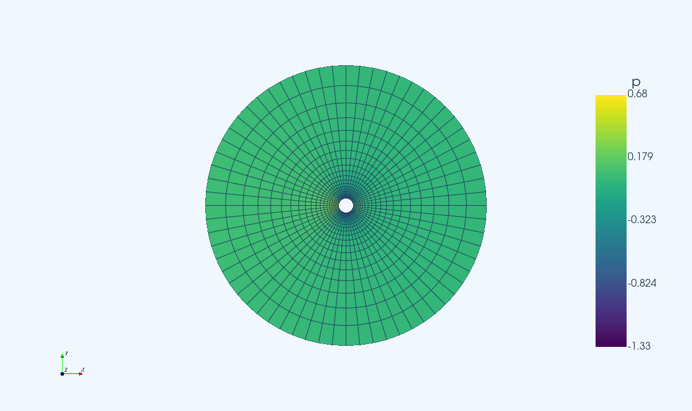
The real guided test submitted a new 5120-cell, four-core case to 0.06 s · 7 saved frames. Context visibility, blocked submission, stale-evidence invalidation and the persisted optional mode all passed.
Raw workbench validationDesign basis: Siemens describes a simulation tree and pipelined mesh operations. This workbench applies those workflow principles with its own Qt/OpenFOAM implementation. Siemens: Simulation Tree & meshing pipeline.
03 · Dimensioned geometry and control regions
- Start with Cylinder preset or open a project. Set domain dimension, rectangular bounds and extrusion depth. All values are SI: metres, seconds, m/s and m²/s. For an O-grid the actual outer boundary is a circle of
outer_radius; rectangular xmin/xmax do not define that topology. - Choose Circle, Rectangle or Triangle and drag a bounding box. Select and move objects; double-click their tree entries for exact centre and size. Circle width is diameter; equal width/height is required by the cylinder O-grid. Eraser deletes an object; Undo restores the previous sketch.
- Wheel zooms the sketch; Pan drags the view; Fit fits the domain. Pointer coordinates use metres; Sketch settings selects ruler units m/cm/mm and snap spacing (0 disables snapping). Precise shape and numerical dimensions support small geometries. Measure reports distance.
- Draw Mesh region rectangles and edit x/y/width/height, size, direction and ratio. A mesh region is a control object, not a solid obstacle. Choose the supported method below before generation.
- Save project before submission. A unique safe case name prevents overwriting existing results. Changing the sketch after submitting does not change that queued case snapshot.
04 · Mesh methods and directional grading
| Method | Cells | Controls / scope |
|---|---|---|
| Structured cylinder O-grid | Conformal quadrilateral cross-section / hexahedral volume | Exactly one circle; radial, circumferential and spanwise counts; radial simpleGrading. Rectangular control regions are not used by this method. |
| Structured partitioned box | Manual shared block partitions / hexahedra | Empty rectangular flow box; erase all obstacles first. Region edges become shared x/y partition lines. Counts and grading propagate along shared axes for conformal interfaces. |
| Gmsh triangle / prism | Automatic triangles extruded to prisms | Circle/rectangle/triangle obstacles and smooth region size fields. In 2D, one empty layer; in 3D, specified spanwise layers. |
| Gmsh quadrilateral / prism | Automatic quad-dominant mixed hex/prism | Recombination does not guarantee an all-quad mesh. Inspect the actual converted mesh and quality. |
| Gmsh tetrahedral | Automatic 3D tetrahedra | Extruded volume geometry; HXT algorithm and Netgen optimization; no 2D tetrahedra. |
Uniform and increasing / decreasing size
For manual blocks, ratio is last-cell width / first-cell width in the selected positive axis; negative directions invert it. Uniform means ratio 1. For N cells and expansion E, adjacent growth g = E^(1/(N−1)); first width is L(g−1)/(g^N−1), or L/N at E=1. This is not a per-cell factor E.
blockMesh: hex (...) (Nr Ntheta Nz) simpleGrading (E 1 1) Gmsh x+ size target: h(x) = h0 × ratio^((x − x0)/width) Gmsh x−: use the inverse exponential; y directions are analogous. Smooth transition: h = h_background + W(x,y) × (h_target − h_background) W: product of four tanh edge weights; overlapping fields use Min.
Gmsh regions specify target sizes, not exact final element widths. The tanh blend reduces abrupt size transitions; smoothing iterations and curvature resolution complement it. They do not guarantee acceptable skewness: the OpenFOAM gate remains mandatory. For a high-quality cylinder baseline, prefer the structured O-grid and moderate adjacent growth. Six-faced hexahedra are supported; arbitrary 2D hexagonal polygon tilings are not implemented.
Use Generate / check mesh only before an expensive solve. Select the resulting queue row and Open result to view the real mesh. A .foam file is a marker pointing to the complete case directory, not a self-contained mesh file.
05 · Quality, bad faces and singular cells
Every submitted mesh runs checkMesh -allGeometry -allTopology with the project’s explicit skew and non-orthogonality thresholds. The solve is blocked unless its log contains Mesh OK. Default project limits are skewness 0.5 and non-orthogonality 30°. These are chosen gates, not universal accuracy criteria. Quality above a threshold is counted by face, not silently relabelled as cell count.
| Metric | Definition / provenance |
|---|---|
| Non-orthogonality | Internal face angle α=acos((Sf·d)/(|Sf||d|)); d=neighbour centre−owner centre. 0° is orthogonal. |
| OpenFOAM face skewness | Offset sv=Cpf−d(Sf·Cpf)/(Sf·d), normalized by max(0.2|d|, maximum point projection along sv). Boundary faces use normal projection and factor 0.4. Uses Foundation14 meshCheck formulas; it is not the triangle-angle skewness diagram metric. |
| Aspect ratio / AR | Reported directly from checkMesh; it describes cell stretching and is not used as a replacement for skewness or orthogonality. |
| Singularity indicators | Independent signed-volume count/minimum plus OpenFOAM topology, determinant, concavity and geometry checks. Red markers show the worst face location, not every possible mathematical singularity. |
Select a case in Run Queue, then click Locate worst skewness / non-orthogonality. The viewer draws the actual faces, colours their calculated metric and places a red marker at the worst face centre. IDs, XYZ coordinates and threshold counts appear in the log and off_quality.json. Calculation uses the actual ASCII polyMesh, including volume-weighted cell centres. Binary imported meshes need conversion to ASCII for this independent audit.
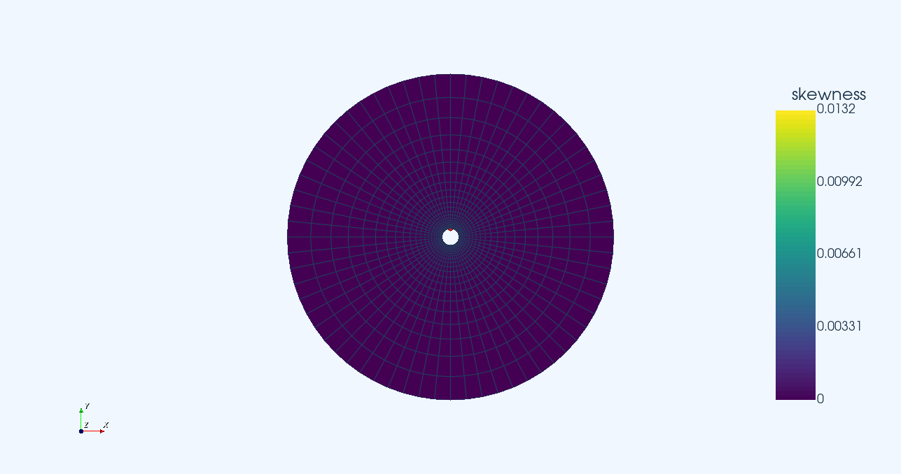
06 · Physics, case code and boundary conditions
| Parameter | Meaning / unit | Validation value |
|---|---|---|
| Re | U∞D/ν | 200 |
| D / U∞ / ν | m / m·s⁻¹ / m²·s⁻¹ | 1 / 1 / 0.005 |
| Nr × Nθ × Nz | True 3D cell count | 20 × 64 × 4 = 5120 |
| Outer radius / depth | m | 10 / 1 |
| Radial expansion E | Last / first width | 20 |
| Turbulence | Model selection | laminar |
| Solver | Foundation14 transient incompressible | foamRun -solver incompressibleFluid |
| PIMPLE | nOuterCorrectors / nCorrectors / nNonOrthogonalCorrectors | 2 / 2 / 1 |
| Time integration / convection | Actual fvSchemes | Euler / linearUpwind grad(U) |
| maxCo / maxDeltaT | — / s | 0.3 / 0.0005 |
| p tolerance / relTol | — | 1e−8 / 0.01; pFinal relTol 0 |
| U tolerance / relTol | — | 1e−9 / 0.1; UFinal relTol 0 |
Flow & solver settings controls U, viscosity, 24 laminar / RAS / LES / hybrid options, duration, maximum internal timestep, saved-field interval, Co and requested cores. Output interval is not the solver timestep. U,p initial fields, physicalProperties, momentumTransport, controlDict, fvSchemes, fvSolution and decomposeParDict are written to the real Linux case. View / edit case dictionaries exposes them; edit inactive cases only.
| Boundary | U | p |
|---|---|---|
| inlet | fixedValue (U∞,0,0) | zeroGradient |
| outlet | zeroGradient | fixedValue 0 |
| cylinder | noSlip | zeroGradient |
| farfield | fixedValue (U∞,0,0) | zeroGradient |
| front / back, 2D | empty | empty |
| front / back, 3D | symmetryPlane | symmetryPlane |
The O-grid has no farfield patch: the upstream semicircle is inlet and downstream semicircle outlet. Gmsh rectangular domains have inlet, outlet and lateral farfield. The validation mesh is geometrically 3D with four z layers, but spanwise-invariant initial/boundary conditions may retain spanwise-invariant flow. It is not a resolved 3D transition or LES benchmark.
kOmegaSST initialization uses k=1.5(U∞I)² and ω=√k/(0.09^¼L), with kqRWallFunction / omegaWallFunction / nutkWallFunction. Wall resolution and y+ suitability require separate physical validation; this release does not automatically optimize y+ or promise a correct high-Re wall treatment. Pressure p has units m²/s²; physical pressure requires density.
07 · Queue, parallel jobs and restart
Submit snapshots the project. The durable SQLite queue claims CPU reservations transactionally. Jobs can run simultaneously when their summed requested cores fit the budget; four-core jobs under a budget of four run sequentially. A scheduler lock prevents GUI and headless worker from launching the same job twice. Each case records stage files, logs and verified MPI process IDs.
QUEUED → STARTING → MESHING → CHECKING → RUNNING → EXPORTING → DONE
quality failure / solver failure → FAILED
RUNNING ↔ PAUSED; lost heartbeat → STALLED; explicit cancellation → CANCELLED- Select a row to see actual logs, residuals, max observed Co and checkMesh metrics. ETA extrapolates recent simulated-time progress; it is an estimate and changes with solver speed.
- Earlier / Later reorders queued jobs. Pause sends STOP only to the verified case MPI launcher and descendants; Continue sends CONT. Pause does not erase or rewrite fields.
- Cancel supports queued or running/paused solver cases. Meshing/checking/export cannot currently be cancelled from the GUI. A paused job keeps its CPU reservation.
- Closing the GUI leaves running detached WSL drivers alive and starts a hidden headless scheduler if work is queued. Reboot terminates solvers; pause is not persistent process suspension across a reboot.
- After reboot reopen the same version. Inspect logs and choose Recover checkpoint for FAILED / STALLED. Recovery requires no live old MPI process, enough CPU budget, and matching complete U,p saved times in every processor. It resumes latestTime without remeshing. Recovery after solver completion but export failure requires manual reconstruction/export.
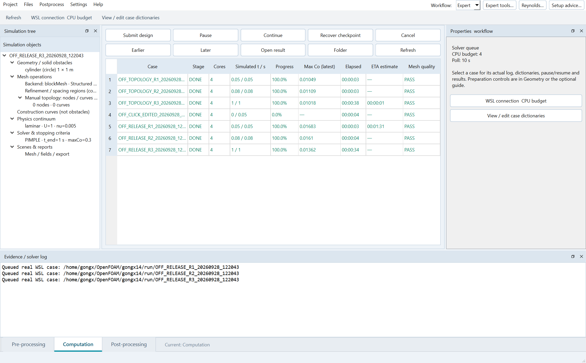
08 · VTK viewing, animation and PINN exports
Open result loads the genuine reconstructed .foam case with vtkOpenFOAMReader. Select Mesh, p, U or other available cell arrays; U uses vector magnitude colouring. Toggle Edges; choose Full volume or XY/XZ/YZ mid-slice. Wheel zooms, left drag rotates, middle drag pans; Fit resets the camera. Clicking reports a displayed cell ID and XYZ. The slice cutter preserves quadrilateral polygons when present; existing triangular cells remain triangles. Rendering does not alter the OpenFOAM mesh.
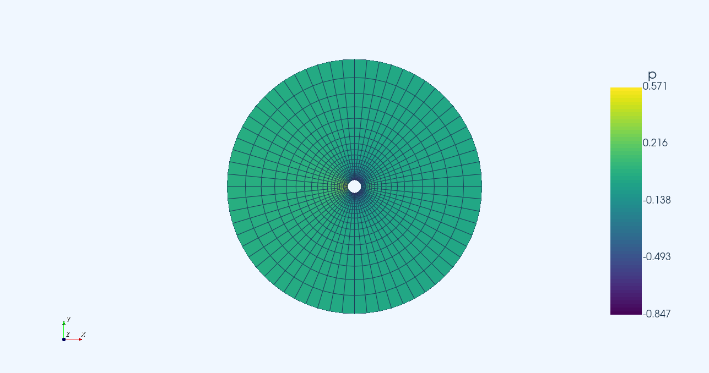
- PNG exports the rendered VTK view. GIF visits the actual saved CFD times; playback uses 150 ms per image and is not physical-time playback. It does not synthesize intermediate CFD frames.
- CSV: enter comma-separated column names (x,y,z,t,U_x,U_y,U_z,U_mag,p), choose current/all times and positive row stride. Coordinates are cell-centre samples. This is a row-stride selector, not an arbitrary spatial query/filter engine.
- MAT contains xytuvp (Nrows,6), full xyztuvwp (Nrows,8), actual time_values_s, column names, units and z_planes. Rows are time-major, then cell order. For a 3D PINN use xyztuvwp; xytuvp drops each row’s z and w and is insufficient to define a full 3D learning problem. No implicit nondimensionalization is applied.
from scipy.io import loadmat
a = loadmat("round3.mat")
full = a["xyztuvwp"] # columns: x,y,z,t,u,v,w,p
time = a["time_values_s"].ravel()
# A 2D model may use xytuvp only after explicitly selecting a z plane.Large full-field MAT/GIF exports build arrays in memory. For large production runs, use smaller saved-field sets or CSV stride; streaming HDF5/VTU exports are a future extension.
09 · Actual force FFT and Strouhal definition
Postprocess → Force history & single-sided FFT reads genuine OpenFOAM forceCoeffs data and displays Cd/Cl history with the lift amplitude spectrum. There is no Hann window, smoothing, filtering, zero padding or mean removal. The DC bin is retained; the annotated peak is the largest non-DC bin, not automatically a validated shedding fundamental.
Fs = 1 / Δt_sample; f_Nyquist = Fs / 2 f_k = k Fs / N; Δf = Fs / N = 1/(N Δt_sample) Y_k = FFT(Cl)_k; A_k = |Y_k| / N Single-sided: double positive-frequency bins, except DC and even-N Nyquist. St = f_s D / U∞
Adaptive solver timesteps can produce nonuniform force samples. The dialog tests spacing and explicitly reports linear resampling to the median interval before FFT when needed. This is uniform-time resampling, not denoising. Saved U,p frame spacing is separate from force sampling. Nonuniform cases would need a different spectral method if resampling is unacceptable.
Require many stationary shedding cycles, adequate sample rate and a common late-time window before reporting St. A peak spread across neighbouring bins can be finite-record leakage; harmonics occur near integer multiples, while transient and modulation peaks need time-history evidence. Nyquist prevents aliasing only when the sampled signal is appropriately band-limited. These validation records are too short for a defensible shedding St.
10 · Measured release validation
| Round | Actual case | Cells | MPI | End / s | Frames | Measured wall / s | MAT xytuvp / xyztuvwp | State |
|---|---|---|---|---|---|---|---|---|
| 1 | OFF_RELEASE_R1_20260928_122043 | 5120 | 4 | 0.05 | 6 | 3 | 30720 × 6 / 30720 × 8 | PASS |
| 2 | OFF_RELEASE_R2_20260928_122043 | 5120 | 4 | 0.08 | 5 | 4 | 25600 × 6 / 25600 × 8 | PASS |
| 3 | OFF_RELEASE_R3_20260928_122043 | 5120 | 4 | 1.0 | 11 | 34 | 56320 × 6 / 56320 × 8 | PASS |
Measured wall time is the Linux off.start–off.end interval covering solve and reconstruction/export; it excludes Windows pre-generation, most meshing and independent export QA. Full workbench test duration is longer. The three cases use the same 5120-cell topology with different durations / output intervals (0.01, 0.02 and 0.1 s). They are repeat workflow tests, not a mesh-convergence study.
| Actual metric | Result |
|---|---|
| Max skewness | 0.0132284624 |
| Max non-orthogonality / ° | 1.7075473e-06 |
| Skewness > 0.5 / non-orthogonality > 30° | 0 / 0 |
| Nonpositive-volume cells | 0 |
| Worst skew face / XYZ m | 2835 / [0.0, 0.5361892901653059, 0.125] |
| Pause test simulated time before / after 1.5 s | 0.0075 / 0.0075 |
| Maximum reserved cores | 4 |
Independent max skewness agrees with checkMesh within 1e−7; the ~1.7e−6° non-orthogonality is floating-point round-off on a radial orthogonal grid. True saved times and four z-centre planes were asserted. Evidence is reproducible; no CFD frames were interpolated for export.
Raw validation JSON · Round 3 MAT (local / 本地) · Round 3 CSV (local / 本地) · Round 3 GIF
..\runtime\Scripts\python.exe tests\validate_release.py # Generates three new cases, never overwrites existing ones.
0.4 · Construction tools, spacing and initial files
- Geometry → Line: drag between two snapped endpoints. Polyline: click vertices; Enter or double-click finishes; Escape cancels. Exact line opens coordinate pairs in metres. Double-click a stored curve to edit its points. Undo/redo, duplicate, move and delete include curves. Orange dashed curves are construction references: they do not cut the fluid domain. Closed arbitrary polygon obstacles remain future work.
- Draw a Mesh region, then open Mesh spacing. Choose O-grid radial grading or R1/R2, Uniform / Increasing / Decreasing, direction and coarse/fine ratio. Preview displays the formula and endpoint values. For radial blocks, q=R^(1/(N−1)); h_i=L q^i / Σq^j. R means last-cell / first-cell width, not adjacent-cell ratio. R<1 decreases spacing.
- Region Gmsh targets use h(s)=h_start R^s with s clamped to [0,1]. A negative direction measures s from the opposite edge. Blending, background size caps, curvature and competing regions affect the generated size. A size-field request is not proof that each unstructured cell edge is strictly monotone. Structured partitioned boxes propagate shared subdivisions and restart grading per segment. Verify generated quality before solving.
- Initial fields / dictionaries opens a local draft at 0/U before submission. Save each edited file, then close to apply differences to the project. Overrides are serialized in the project and written to each new case. Change Flow settings first; raw overrides persist and can supersede those settings. Pressure p is kinematic m²/s². Formatting preserves tokens; a structure check is not OpenFOAM semantic validation. Running cases cannot be edited through the case editor.
- Desktop and Start Menu contain a native OpenFOAM Friend icon. The root launcher reads LATEST.txt; old timestamped releases remain available. install.ps1 recreates shortcuts on another Windows PC.
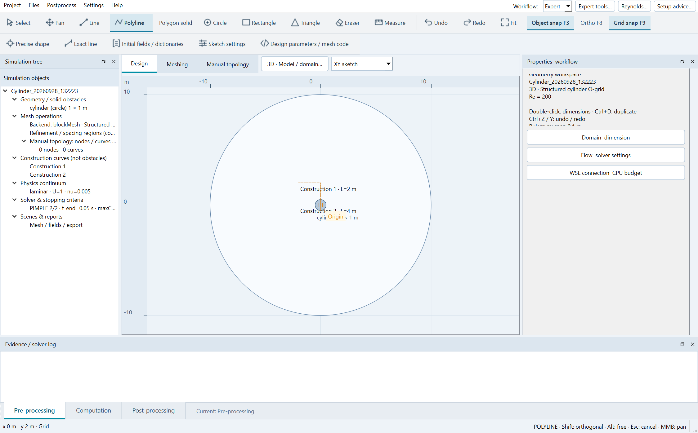
SSH / Slurm setup and submission
- Settings → SSH / Slurm supercomputer. Enter a host or existing SSH config alias, optional username/key, remote root, site OpenFOAM environment command, partition/account, MPI ranks and walltime. Use a local key or SSH agent. Do not paste secrets into reports.
- First verify the host fingerprint through your institution and establish known_hosts using normal ssh. The GUI uses BatchMode and StrictHostKeyChecking=yes; it will reject unknown or changed keys. Save & test is read-only and checks foamRun/sbatch/squeue.
- Choose an inactive real case with 0, system, constant and either polyMesh or blockMeshDict. Preview the generated Slurm script. Upload copies only those three directories and the reviewed script; it does not upload processor fields or old time folders. Remote existing case folders are protected. To rerun, use a new case name/directory. External include dependencies are not bundled automatically.
- Confirm that srun or mpirun matches site MPI configuration. Edit the exact script if needed, then press Upload & submit. A successful numeric sbatch ID is recorded; failures remain visible in the log. Scheduler refresh batches squeue/sacct queries and polls at ≥30 s. Hold/release applies to pending jobs. Cancel invokes scancel after confirmation. Running-job suspend/resume, result download and PBS are future work.
- The submitted script checks mesh quality, sets the decomposition count, solves, reconstructs and exports actual VTK. This is a clean run using initial fields, not a remote restart service. Site quotas, scheduler queue times and permissions may reject commands. Scheduler elapsed/walltime are not a trustworthy physics completion ETA.

0.5 · Drawing interaction
Lines and rectangles use drag. Circle uses centre and radius: press at the centre, drag to the radius and release. Polyline uses clicks; Enter, double-click or right-click finishes. Backspace / Ctrl+Z removes the last draft vertex. Escape first cancels the draft while retaining the tool; a second Escape selects. Tools remain active for repeated drawing.
F3 toggles endpoint/midpoint/centre/quadrant snaps; F9 toggles grid snap. Object snap uses a 9-pixel aperture independent of zoom. Shift or F8 constrains line directions horizontally/vertically. Alt temporarily disables snapping. The crosshair indicates the acquired point and the live label shows length/angle/diameter/width/height. Middle-button drag pans without changing the drawing tool; wheel zoom follows the pointer. V/H/L/P/C/R/G/M select the corresponding tools when the canvas has focus. Ruler clicks do not create objects.
This is tested interaction functionality, not a formal usability study. Construction curves still do not form arbitrary solid obstacles. Remote Slurm remains untested against a real cluster. The previous strict-shell environment incompatibility is corrected by avoiding nounset during OpenFOAM setup; the local environment now loads successfully.
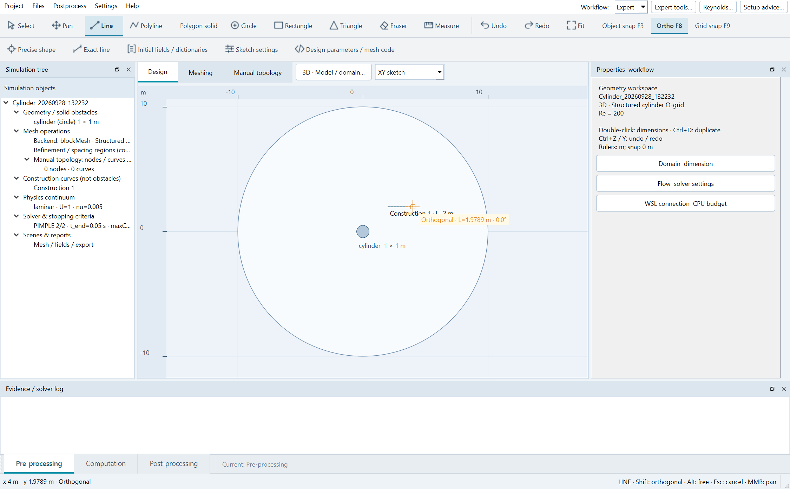
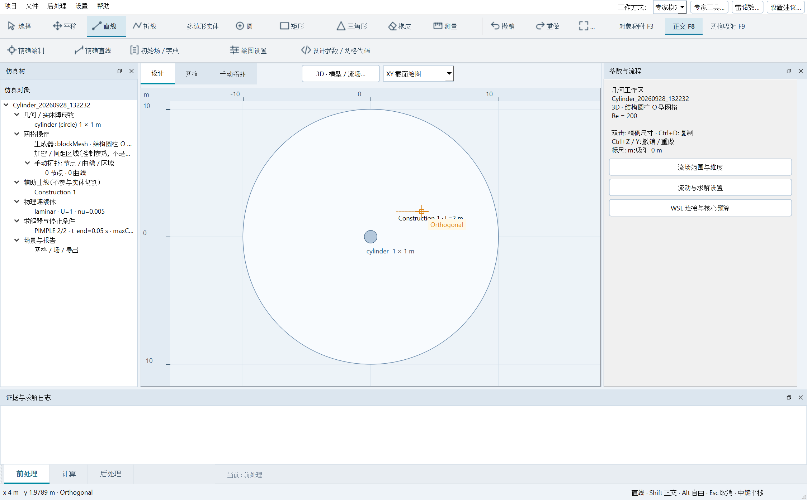
Interaction test evidence · Qt Graphics View · Autodesk precision controls
11 · Industrial references and design choices
The design borrows workflow principles, not proprietary implementations: staged geometry→mesh→solve guidance from Ansys; a shared object tree from SALOME; wall-spacing/orthogonality inspection from Pointwise; persistent view/field/time controls from ParaView. Qt Graphics View supplies native sketch interaction, Gmsh provides OCC operations and size fields, and VTK provides the real result rendering.
Recommended next engineering priorities: constrained sketch dimensions and richer block topology; independent 3D CAD import; boundary-layer/y+ tools; long-window convergence studies; streaming exports; automated installer and physical second-PC tests. These are not presented as existing features.
- Qt Group. (n.d.). Graphics View Framework.
- Geuzaine, C., & Remacle, J.-F. (2026). Gmsh reference manual (Version 4.15.2).
- The OpenFOAM Foundation. (2026). OpenFOAM 14.
- Kitware. (n.d.). ParaView user guide: Displaying data.
- Ansys. (n.d.). How to mesh with watertight geometry workflow.
- SALOME. (n.d.). Graphical user interface.
- Cadence. (n.d.). Pointwise: Wall spacing.
0.7 · Movable tabs and SSH configuration
The workspace tab strip starts at the bottom on a fresh profile. Drag its left grip into the upper or lower half of the application and release to dock at the top or bottom. Releasing outside the window cancels. Right-click the strip also provides top/bottom commands. Position is saved across restarts; Settings → Reset workspace layout restores bottom placement without deleting your project.
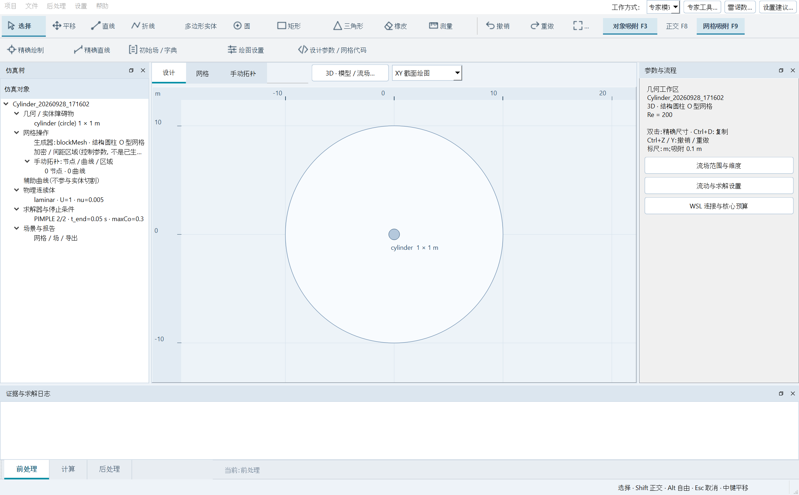
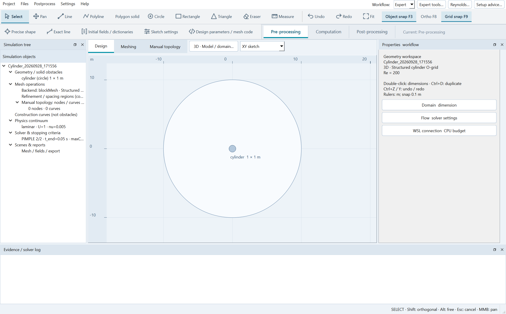
SSH / Slurm setup
Settings → SSH / Slurm supercomputer opens a non-blocking configuration and job panel. First log in with your site-provided host and username in a terminal and verify its fingerprint with the site. Use an existing local private key or ssh-agent; the application does not store passwords. Fill the fields below, save and test, select an inactive real OpenFOAM case, generate the batch script, review it, then submit.
| Field | Meaning |
|---|---|
| Host / User / Port | Site login host or SSH config alias, username and port. |
| Identity | Existing local key path; empty uses SSH config/agent. The key is never uploaded. |
| Remote root | Writable absolute scratch directory, e.g. /scratch/yourname/off. |
| Environment | The actual site module load or source command for Foundation OpenFOAM. Do not assume your WSL path exists remotely. |
| Partition / Account | Queue and allocation project supplied by the cluster; omit only if the site allows. |
| Walltime / Cores / Launcher | Requested time limit in HH:MM:SS, MPI ranks and site-compatible srun/mpirun. Walltime is a limit, not an ETA. |
| Poll seconds | At least 30 seconds; 60 is the default. |
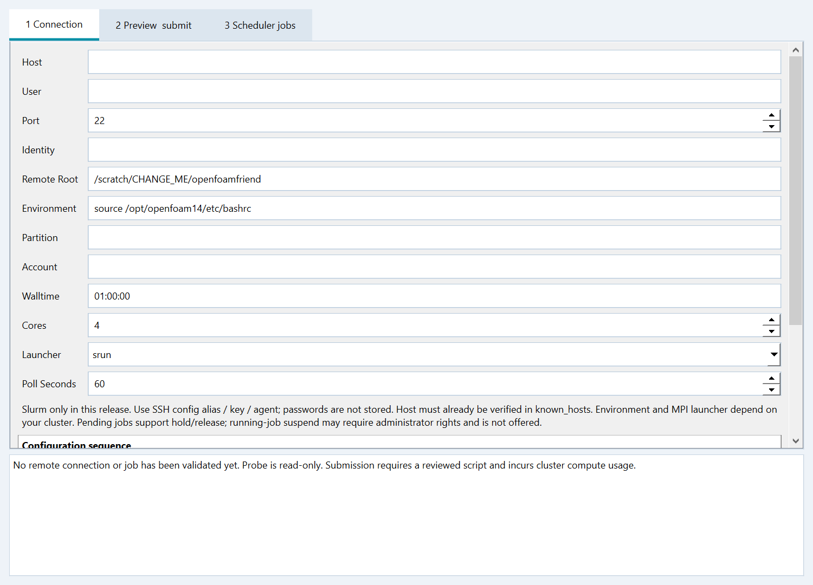
Save & test is read-only and checks foamRun, sbatch and squeue. Upload transfers 0, system and constant, including existing polyMesh, then submits the exact reviewed script. The scheduler table displays status, elapsed and scheduler details. Hiding this panel keeps polling while the main app is open. On restart saved remote records resume polling. Exiting the app does not cancel remote jobs. Hold/release applies to pending jobs; cancellation requires confirmation.
Verification: actual toolbar pointer drag in both directions, position restoration, reset and dialog lifecycle passed. SSH polling lifecycle used a clearly labelled fixture transport. No real supercomputer was contacted or submitted to. Real site MPI, quotas and scheduler configuration still need validation. PBS, automatic remote result download and running-job suspension are not implemented.
Raw docking and SSH lifecycle evidence · Qt QToolBar · Slurm sbatch
0.8 · Selection and 2D / 3D design
This is an additive release: the existing drawing tools, object tree, mesh methods, guide, movable workspace tabs, job queue, dictionaries, post-processing exports and SSH remain. Click Select or press V while the sketch has focus. Click the body or its text label to select; the selected geometry is orange and the selected object is named above the canvas. Ctrl-click adds/removes selection. Selection is preserved when the view is rebuilt or the interface language changes; it does not create an undo entry. Existing object movement and drawing shortcuts are retained.
The new model/domain button sits above the pre-processing view. Select 2D or 3D explicitly, set Z depth and spanwise layers, then confirm. 2D writes one empty spanwise layer; 3D creates a true volume mesh with the selected layer count. The pre-processing view selector switches between editable XY sketch and 3D extrusion model. 3D supports wheel zoom, drag orbit and click-to-select solids synchronized with the sketch. Domain controls are still available from the original inspector/tree.
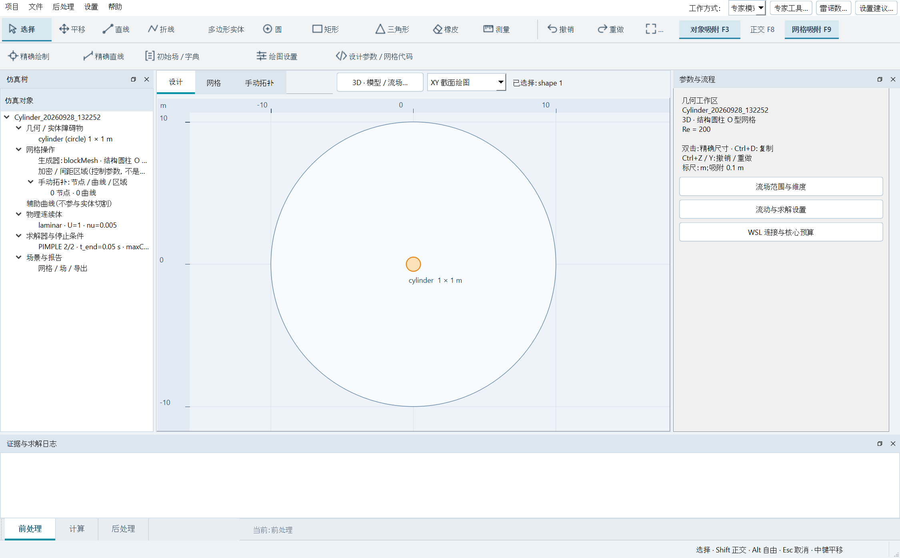
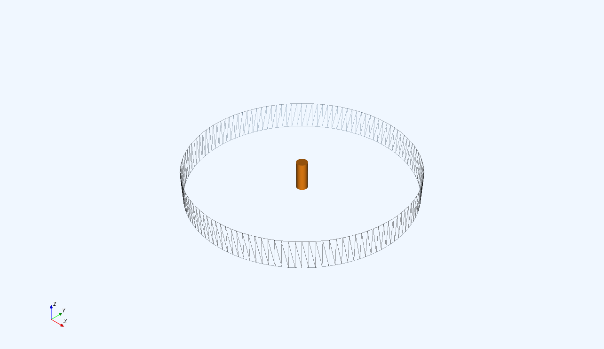
Supported 3D design is an XY section extruded along Z: circle→cylinder, rectangle→prism, triangle→triangular prism. Arbitrary 3D CAD solids and booleans remain unimplemented. Quality and result views still use actual generated OpenFOAM meshes and saved fields. A further real 2D 1280-cell/four-core solve and finite MAT export verifies the one-layer path, alongside three real 5120-cell/four-core 3D pipeline tests.
Pointer selection and extrusion evidence · Actual 2D solver evidence
0.9 · Project workspace, terminal and genuine field playback
Welcome / Projects opens recent reproducible project JSON files, creates a 2D or 3D cylinder project and links to both manuals. Its startup checkbox is optional. Two-click Line: choose Line, click the first point, release, move and click the endpoint. Esc cancels; Undo reverts. Press-drag-release and the original polyline/object-selection features remain. Lines are construction guides; arbitrary CAD booleans are not implemented.

Pre-processing → Design parameters / mesh code provides validated, editable project JSON plus read-only generated blockMeshDict (or Gmsh generator). Initial fields / dictionaries remains the editor for U, p and numerical schemes. All design values use SI. Formatting preserves OpenFOAM function-key adjacency such as div(phi,U); solver parsing was verified by the actual runs. Dictionary overrides have precedence over generated values: review them before submitting.
Project → Detect WSL / OpenFOAM scans installed distributions, user home, available CPUs, bashrc and run folders. Applying a detected profile first verifies foamRun. Foundation 14 is the validated solver target; other versions need compatibility checks. Settings → WSL Terminal opens a dockable persistent Bash console: Connect, type commands, Enter, Up/Down history, Ctrl+C button, exit to close the shell. The terminal starts in the selected Linux working directory. It is a plain-text command console, not a complete VT/ncurses emulator. Do not paste secrets into exported logs.
Post-processing offers Play/Pause, previous/next saved frame, loop and 0.1×–50× physical-time playback rates. It does not manufacture interpolated fields or change CFD deltaT. Select p, U, u, v, w, speed, vorticity, its components or magnitude. Curl(U) is a VTK spatial-gradient estimate in s⁻¹, not an additional solved OpenFOAM field. Boundary derivatives may be less accurate. A solid-body rotation test with exact curl=(0,0,4) verifies signs and values. Pressure remains kinematic m²/s². MAT retains xytuvp and xyztuvwp; use xyztuvwp for 3D PINNs.
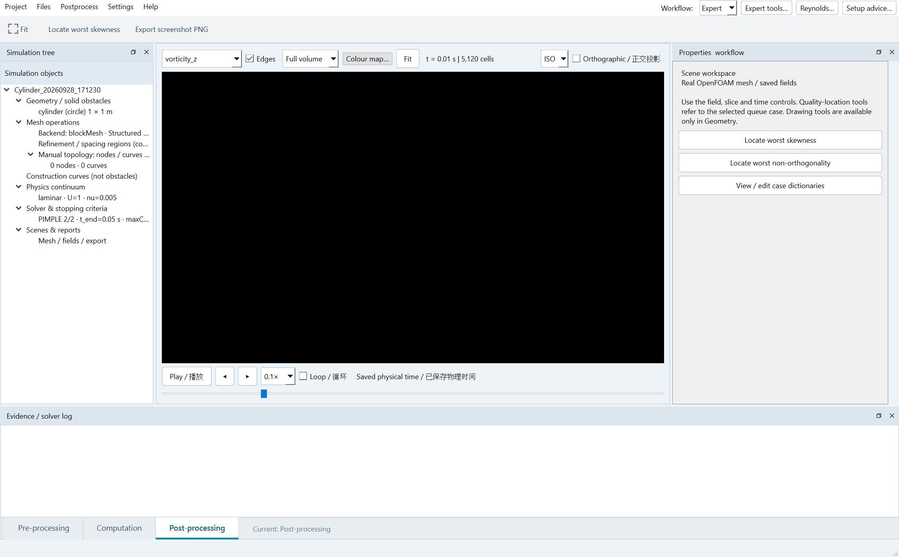
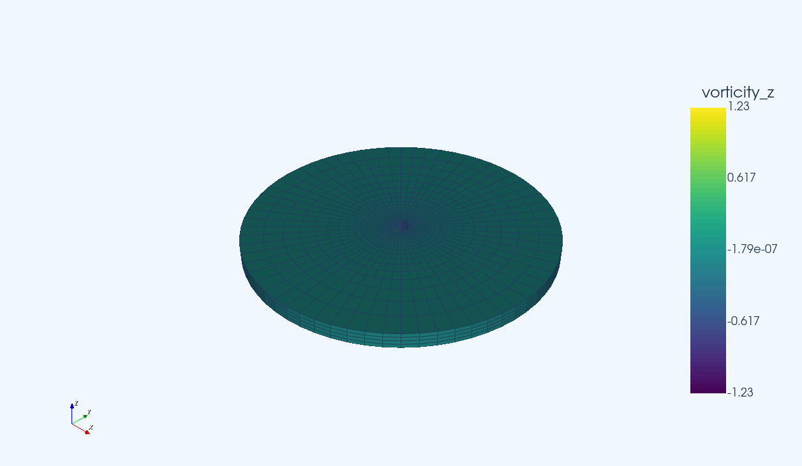
Both 3D scenes offer ISO and ±X/±Y/±Z orientations, orthographic projection, wheel zoom and trackball orbit. The busy progress indicator represents work in progress, not invented percentage completion. Buttons show pressed feedback; the initiating button is disabled during its background task. Open result, CSV, MAT, WSL probing and case-copy work run in background workers. GIF renders on the GUI thread while servicing paint events.
Postprocess → Export complete .foam case folder copies the reconstructed serial mesh, dictionaries, genuine field directories, force history and logs to a new protected folder, then opens Explorer. A .foam marker alone is not CFD data. export_manifest.json lists actual field times. Export verification reopens this folder through VTK and checks 5120 cells / 6 genuine frames. Three fresh four-rank 5120-cell 3D cylinder tests, plus a separate 2D solve, check this release; these short runs verify the software pipeline, not physical grid convergence or statistically converged cylinder forces.
Current controls and export evidence · VTK gradient / curl reference · Qt process console reference
0.10 · User-controlled colour map and legend
- Open a genuine result, choose a scalar/vector field, then click Colour map… beside the view controls (or use the scene right-click menu). Mesh-only view disables the colour editor.
- Choose Viridis, Cividis, Blue–red, Grey, legacy Rainbow or Turbo; reverse if required. Auto range follows the actual current frame. For honest visual time comparisons, click Use current data range as fixed limits, or enter a fixed minimum/maximum in scientific notation.
- Positive fixed limits are required for log scale. A log range cannot cross zero. Outside-range values use end colours; no CFD values are clipped or modified.
- Legend & layout controls title, tick count, numeric precision/format, font sizes, vertical/horizontal orientation and normalized viewport position/size. Position is measured from the bottom-left. Apply updates the actual VTK legend; OK applies and closes; Cancel discards unapplied controls. Settings are independent per field and persist across sessions.
- PNG and genuine-frame GIF exports use the displayed palette and fixed range. Verify units and title before sharing a figure.
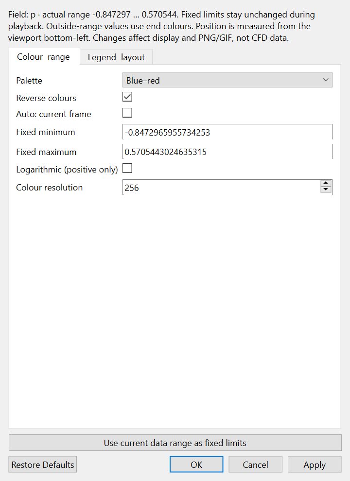
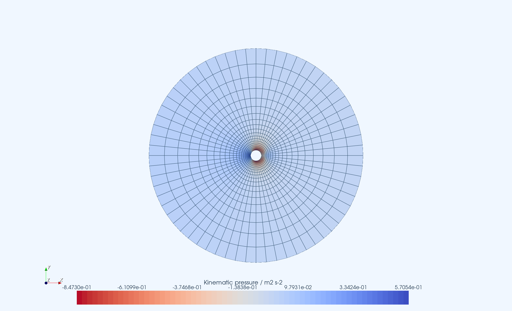
Actual 11-frame colour/persistence/export tests · VTK scalar-bar reference
0.10 · 24 verified incompressible model options
Flow & solver settings lists 1 no-turbulence option, 13 RAS, 6 LES and 4 hybrid DES/DDES/IDDES options. The factory list was checked against this host’s actual Foundation 14 source. Retained 0.11 evidence records all 24 options passing four genuine solver timesteps on a 5120-cell 3D cylinder with four MPI ranks, reconstruction and finite required-field CSV/VTK export. Twenty-three use installed built-in models; dynamicLagrangian uses the explicitly documented isolated compatibility implementation below.
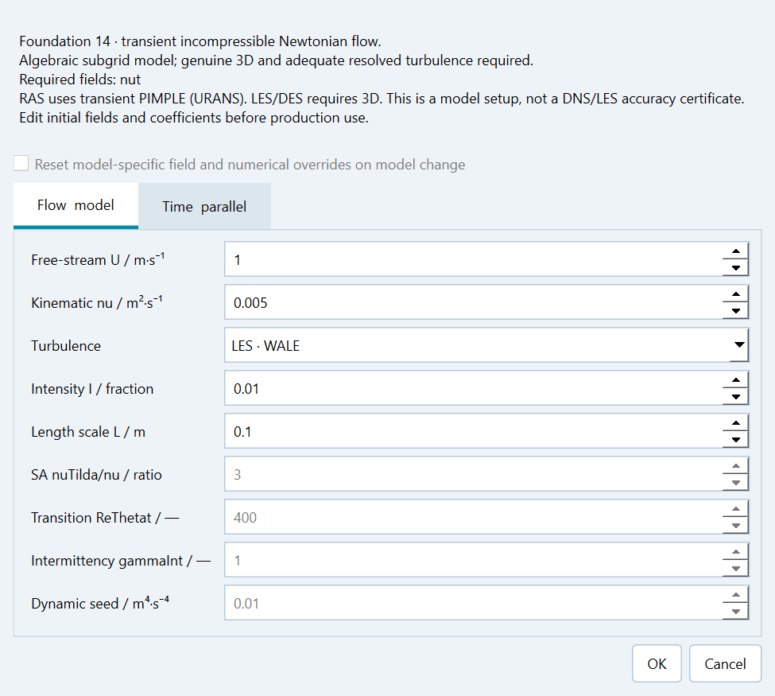
| Family | Canonical model | Initial fields beyond U,p | Scope | Integration test |
|---|---|---|---|---|
| Laminar | laminar | U, p | No eddy-viscosity model. DNS is a resolution claim, not a separate switch. | PASS · 4 MPI · 5120 · 3 frames |
| RAS | SpalartAllmaras | nuTilda, nut | One-equation eddy viscosity; commonly used for aerodynamic boundary layers. | PASS · 4 MPI · 5120 · 3 frames |
| RAS | kEpsilon | k, epsilon, nut | Standard two-equation k–epsilon; wall functions. | PASS · 4 MPI · 5120 · 3 frames |
| RAS | RNGkEpsilon | k, epsilon, nut | RNG k–epsilon; strain-sensitive correction. | PASS · 4 MPI · 5120 · 3 frames |
| RAS | realizableKE | k, epsilon, nut | Realizable k–epsilon; variable eddy-viscosity coefficient. | PASS · 4 MPI · 5120 · 3 frames |
| RAS | LaunderSharmaKE | k, epsilon, nut | Low-Re k–epsilon; wall-resolved near-wall mesh required. | PASS · 4 MPI · 5120 · 3 frames |
| RAS | kOmega | k, omega, nut | Standard k–omega; wall-resolved option. | PASS · 4 MPI · 5120 · 3 frames |
| RAS | kOmega2006 | k, omega, nut | Revised 2006 k–omega formulation. | PASS · 4 MPI · 5120 · 3 frames |
| RAS | kOmegaSST | k, omega, nut | SST k–omega; adverse-pressure-gradient/separation applications. | PASS · 4 MPI · 5120 · 3 frames |
| RAS | kOmegaSSTSAS | k, omega, nut | Scale-adaptive SST; needs temporal and spatial resolution for resolved structures. | PASS · 4 MPI · 5120 · 3 frames |
| RAS | kOmegaSSTLM | k, omega, nut, ReThetat, gammaInt | SST transition model. Inlet transition seeds require problem-specific calibration. | PASS · 4 MPI · 5120 · 3 frames |
| RAS | v2f | k, epsilon, v2, f, nut | Four-equation elliptic-relaxation model; wall-resolved mesh. | PASS · 4 MPI · 5120 · 3 frames |
| RAS | LRR | R, epsilon, nut | Reynolds-stress transport model; tensor stress and epsilon. | PASS · 4 MPI · 5120 · 3 frames |
| RAS | SSG | R, epsilon, nut | Reynolds-stress transport model; tensor stress and epsilon. | PASS · 4 MPI · 5120 · 3 frames |
| LES | Smagorinsky | nut | Algebraic subgrid model; genuine 3D and adequate resolved turbulence required. | PASS · 4 MPI · 5120 · 3 frames |
| LES | WALE | nut | Algebraic subgrid model; genuine 3D and adequate resolved turbulence required. | PASS · 4 MPI · 5120 · 3 frames |
| LES | kEqn | k, nut | Subgrid kinetic-energy transport; genuine 3D and appropriate filter width. | PASS · 4 MPI · 5120 · 3 frames |
| LES | dynamicKEqn | k, nut | Subgrid kinetic-energy transport; genuine 3D and appropriate filter width. | PASS · 4 MPI · 5120 · 3 frames |
| LES | dynamicLagrangian | flm, fmm, nut | Lagrangian dynamic SGS; dimension-correct isolated Foundation 14 compatibility module (wmake required); positive U^4 averaging seeds. | PASS · 4 MPI · 5120 · 3 frames |
| LES | DeardorffDiffStress | R, nut | Subgrid stress transport; tensor stress rather than only eddy viscosity. | PASS · 4 MPI · 5120 · 3 frames |
| Hybrid | SpalartAllmarasDES | nuTilda, nut | Hybrid RANS/LES. Mesh-dependent switching must be assessed; no automatic accuracy guarantee. | PASS · 4 MPI · 5120 · 3 frames |
| Hybrid | SpalartAllmarasDDES | nuTilda, nut | Hybrid RANS/LES. Mesh-dependent switching must be assessed; no automatic accuracy guarantee. | PASS · 4 MPI · 5120 · 3 frames |
| Hybrid | SpalartAllmarasIDDES | nuTilda, nut | Hybrid RANS/LES. Mesh-dependent switching must be assessed; no automatic accuracy guarantee. | PASS · 4 MPI · 5120 · 3 frames |
| Hybrid | kOmegaSSTDES | k, omega, nut | SST-based detached-eddy simulation; 3D wake resolution is essential. | PASS · 4 MPI · 5120 · 3 frames |
Initialisation, units and editable code
k = 1.5 (U I)^2 [m2/s2] omega = sqrt(k) / (0.09^0.25 L) [1/s] epsilon = 0.09^0.75 k^1.5 / L [m2/s3] nuTilda = sa_viscosity_ratio * nu [m2/s] R = diag(2k/3, 2k/3, 2k/3) [m2/s2] v2 = 2k/3 [m2/s2] f [1/s] ReThetat, gammaInt [dimensionless] flm, fmm (compatibility implementation) [m4/s4]
I is an intensity fraction (0.01=1%); L is metres. Transition ReThetat defaults to 400 and gammaInt to 1 as editable seeds, not a case-specific transition correlation. SA viscosity ratio defaults to 3. Dynamic flm/fmm seed defaults to 0.01 m4/s4. Initial fields / dictionaries exposes all generated fields, R as volSymmTensorField, model coefficients and field solvers. Turbulence convection uses Gauss upwind; use research-appropriate schemes after verification. Switching models retains your overrides; stale model-field overrides are rejected before creating a case. An unchecked, explicit reset option removes only model-specific fields/numerics and preserves U,p/viscosity overrides.
Standard k/epsilon wall-function presets use kqRWallFunction, epsilonWallFunction and nutkWallFunction; omega models use omegaWallFunction. SA/LES/hybrid use low-Re nut wall handling. Launder–Sharma uses k=0 and a positive epsilon wall regularisation max(epsilon_inlet×1e−8,1e−20) to avoid the actual 0/0 in its fMu calculation. This regularisation and all wall presets are explicitly reviewable in 0/*; near-wall resolution/y+ and physical boundary suitability remain problem-specific. v2f sets k,v2,f=0 on the wall. LES filter is cubeRootVol; DES/DDES uses maxDeltaxyz and IDDES uses IDDESDelta. SAS also needs delta cubeRootVol.
Isolated dynamicLagrangian compatibility module
The installed Foundation 14 constructor requires dimensionless flm/fmm, but its dimensional transport equations require velocity^4. Both failures were reproduced and retained. The GPL source module renames the runtime model to offDynamicLagrangian and corrects those two constructor dimension arguments; it preserves the original equations and dimension checking. It compiles with wmake into a version-specific user library. Installed /opt/OpenFOAM files are not modified. First use on another WSL/Slurm host requires Foundation 14 development headers, wmake and a C++ compiler. The case/SSH bundle includes source, Make files, COPYING and provenance; compilation errors appear in the case logs. The generated momentumTransport model name is therefore offDynamicLagrangian, while the GUI lists dynamicLagrangian with a compatibility explanation. Real remote Slurm execution remains untested.
Exact source modifications and provenance · All model case paths and actual results · Retained original failures
CFD Direct. (2026). OpenFOAM user guide: Turbulence modelling. · The OpenFOAM Foundation. (2026). dynamicLagrangian source (OpenFOAM 14).
0.10 · Ten find–improve–retest cycles
Ten documented cycles record a concrete observed deficiency, the implemented change, test evidence, timestamp and source hashes. Regression reruns do not invent extra cycles. Original failed model runs remain available, and release publication requires the current evidence to pass.
| Cycle | Observed deficiency | Improvement | Retest |
|---|---|---|---|
| 1 | Toolbar command frames made drafting workspace visually heavy; modes and modal operations still need visible state. | Compact outline drafting icons, transparent idle toolbar, subtle hover, persistent selected underline; preserve command/worker state. | Actual Qt pointer clicks, modal open/close, exclusive tools and asynchronous worker state. · PASS |
| 2 | Fixed-decimal spin boxes rounded small scientific colour limits to zero. | Scientific-notation inputs preserve finite small/large scalar limits without fixed decimal rounding. | Enter -1e-14 and 3e-14 in actual colour dialog and verify VTK lookup range. · PASS |
| 3 | The physics selector exposed only laminar and SST, omitting registered mainstream families. | Add a typed catalogue of 24 options: laminar, 13 RAS, 6 LES and 4 hybrid DES/DDES/IDDES; document field requirements and scientific scope. | Compare every catalogue model against the installed Foundation 14 factory registrations. · PASS |
| 4 | Adding model names alone leaves missing scalar/tensor fields and solver discretisation entries. | Generate required initial fields, wall policies, dimensions, model coefficients, transported-field solvers and editable initial dictionaries for each family. | Generate and validate all 24 complete model dictionary contracts; verify R is a symmetric tensor. · PASS |
| 5 | A flat model list has no scientific context and can submit a nominal LES on a 2D mesh. | Native model family labels, required-field explanation, explicit transient-RAS semantics and 3D LES/hybrid submission guards. | Select WALE in the real dialog; reject 2D/one-layer LES and retain 2D RAS. · PASS |
| 6 | New transition and SA models need explicit problem-dependent seeds; NaN bypassed simple positive comparisons. | Expose transition ReThetat/intermittency, SA viscosity ratio and dynamic seed, disable irrelevant controls, reject nonfinite numeric project values. | Generate customised transition/SA fields and reject NaN in seven important parameters. · PASS |
| 7 | CSV ignored stress tensors and a failed export could replace a valid file or change the displayed timestep; VTK exports were limited to U/p. | Export scalar/vector/symmetric/full-tensor components, correct symmetric-tensor Frobenius norm, atomic CSV commit with reader restoration; local and SSH VTK export all model fields. | Six-component tensor fixture plus successful/failing CSV exports, unchanged existing file and reader timestep. · PASS |
| 8 | Actual MPI tests exposed missing SAS delta, zero wall-epsilon division in Launder-Sharma, an upstream dynamicLagrangian constructor/transport dimension inconsistency, and an exception-trapping startup false alarm. | Supply SAS delta and explicit positive wall-epsilon regularisation; compile a separate GPL dimension-correct dynamicLagrangian module without changing installed OpenFOAM or disabling dimension checks; distinguish trapping announcements from true failure signals. | 24 genuine 5120-cell/4-rank model cases pass 4 timesteps, 3 genuine frames, finite required fields and VTK/CSV export; retain original failed attempts and source provenance. · PASS |
| 9 | Automatic per-frame recolouring prevents consistent time comparisons; colour-bar position, title and formatting were not user-adjustable. | Per-field persistent palette/reverse, fixed or automatic scientific range, freeze-current-range control, safe logarithmic range, title/ticks/fonts/layout and screenshot/GIF integration. | Actual 11-frame case: fixed LUT across playback, independent p/u settings, reload persistence, horizontal legend and genuine PNG/GIF; reject invalid log/range/layout. · PASS |
| 10 | Switching physics could retain incompatible omega/k dictionary overrides; an isolated native model needs portable source/build support rather than a host-only binary. | Reject stale model-field overrides early; offer an unchecked explicit reset retaining U/p/viscosity; retain native GPL sources in complete-case/SSH exports and compile them on the target host. | Real model dialog switch with explicit reset, stale-field rejection, and SSH archive/compile-script checks; follow with complete additive-feature regression suite. · PASS |
Complete timestamp/hash/evidence ledger · Additive full-workflow regression results
0.11 · Expert mode and Reynolds scaling
Use the top-right Workflow selector: Expert opens direct access through Expert tools; Guided opens the optional workflow dock. Neither mode removes drafting, dictionaries, terminal, queue, SSH or result tools. The active mode remains visible on every workspace.
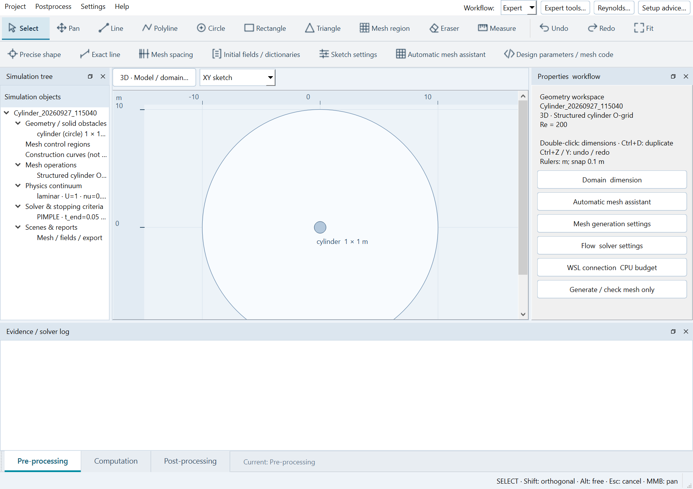
Click Reynolds. Re=UL/nu uses SI metres, m/s and m²/s. Enter 1≤target Re≤10⁷, then click Calculate nu to preserve U and L, or Calculate U to preserve nu and L. The target input alone never changes physics. Current Re and the resulting SI values are displayed before OK. Cancel leaves the project unchanged.
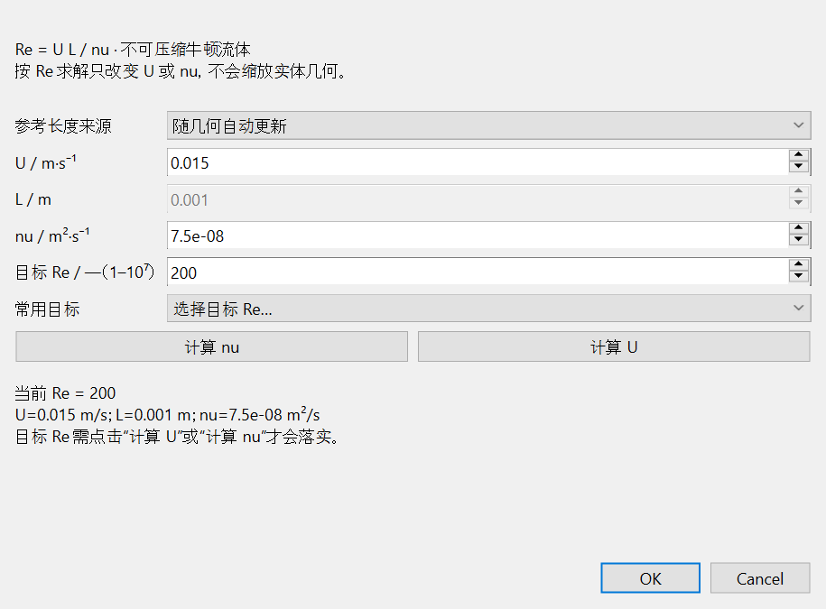
Automatic L follows the sole obstacle width (diameter for a circular cylinder). Multiple obstacles or an empty domain require an explicit custom L. Custom L is a coefficient/scaling reference, not a drawing dimension: geometry never changes. OpenFOAM force lRef and FFT St_L use the same L; drag/lift Aref remains projected obstacle width × extrusion depth. Existing U/viscosity overrides are shown and must be reviewed or explicitly reset; other dictionary overrides remain intact.
0.11 · Recommendations grounded in the current mesh
Setup advice offers two goals: engineering mean/URANS comparison, or resolving 3D wake fluctuations. The recommendation is a transparent starting heuristic, not a universal Reynolds-number threshold for turbulence. For the circular-cylinder screening, Re_D<300 offers laminar; above that engineering comparison offers SST, while a resolved-wake goal offers WALE only with 3D eligibility. These 300/10⁵ bands are application heuristics, not claimed physical transition boundaries. Geometry, inlet turbulence, roughness, wall treatment, uncertainty and benchmark evidence still govern the decision.
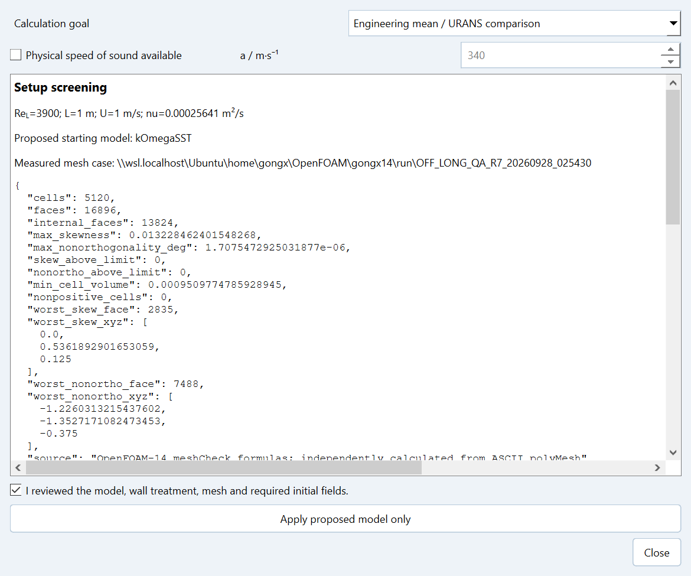
Only completed local cases with matching geometry, mesh controls and actual off_project.json metadata can supply mesh evidence. The report recalculates OpenFOAM-style quality, worst faces, cell count and cylinder wall-normal cell-centre distances. Cache reuse requires the SHA-256 of points/faces/owner/neighbour/boundary and matching quality thresholds. A geometry/mesh change invalidates older matching cases. External mesh edits are not geometrically certified merely by metadata; structured cell-count mismatch blocks application.
Measured first-cell distance is geometric, not y+. y+ stays unknown until measured from a solved case. Re alone never infers y+. LES/DES also needs resolved energy, wall/wake/filter scales, suitable span boundaries and statistical convergence; default front/back symmetryPlane is not a periodic LES span. High-Re cylinder drag crisis/transition depends on roughness and inlet turbulence. When a physical sound speed is supplied, Ma=U/a≥0.3 blocks the incompressible recommendation; without it Mach is explicitly unknown.
G = max_cells [ Σ_faces |(1,0,0) · S_f| / (2 V) ] Co_uniform = Δt · U · G Δt_start_estimate = Co_limit / (U · G)
G comes from genuine face area vectors and cell volumes. This uniform-inlet geometric estimate excludes acceleration/crossflow and never replaces actual solver maximum Co or time-step convergence. No automatic change to dt, end time or mesh is made. Application is disabled without matching mesh evidence, for invalid/excessive quality, non-finite metrics, high Mach or dictionary overrides. Review checkbox + Apply changes the model only.
CFD Direct. OpenFOAM v14 User Guide: Turbulence models.
Greenshields, C., & Weller, H. Notes on CFD: Turbulence near walls.
0.11 · Five test-engineer review and correction stages
| Round | Deficiency found | Correction and verification |
|---|---|---|
| 1 | No explicit expert mode; direct tools are difficult to discover. | Persistent compact Expert/Guided selector and expert tools hub; actual mode-switch and cancellation tests. · PASS |
| 2 | Re is display-only and reference length is implicit. | SI Re calculator, geometric/custom L and U/nu solve; 66 combinations and 1–10^7 endpoints; consistent force/FFT reference. · PASS |
| 3 | Re alone cannot certify a model or mesh; generic recommendations would be misleading. | Goal-specific, cylinder-scoped heuristic advice; 3D/span/wall/Mach limitations and primary sources. · PASS |
| 4 | Dictionary overrides can supersede GUI values; older mesh evidence can be stale. | Explicit U/nu override review/reset, design and case-metadata matching, gated model-only application. · PASS |
| 5 | Real cold build failed on Windows CRLF; repeat mesh measurement was slow; bad metrics and narrow layouts need guarding. | Force LF Make/files; genuine cold compile/MPI retest; mesh SHA-256 cache with threshold checks; finite/Mach/stale guards; native bilingual visual QA and full-pipeline regression. · PASS |
Five-stage evidence ledger · Actual mesh recommendation integration · 24 retained 0.11 MPI model tests
The original 0.10 ten-cycle ledger is retained as historical evidence. The 0.11 release added the five review stages and 24 model tests, retained here as historical evidence. Historical 0.12 added three fresh 3D pipelines, eight fresh 10-second pipelines, current drafting/file tests and preserved-workflow regressions. These are software integration checks, not a Re=10⁷ production-accuracy certificate. Failed first attempts are retained.
0.12 · Eight retained 0.12 full 10-second QA simulations
Eight additional sequential rounds each integrate the real three-dimensional incompressible equations from 0 to 10 s on 5120 cells with four MPI ranks. Saved fields are genuine 0, 0.5, …, 10 s frames; every required model field is checked for finite values at all 21 frames. Mesh checks, force output, CSV, PINN MAT, PNG and real-frame GIF are verified. Round 3 also verifies an actual STOP/CONT pause and continuation.
| Round | Re | Model | t / s | Cells / ranks | max Co | Frames | Result |
|---|---|---|---|---|---|---|---|
| 1 | 200 | laminar | 10.0 | 5120 / 4 | 0.178505 | 21 | PASS |
| 2 | 1 | laminar | 10.0 | 5120 / 4 | 0.124264 | 21 | PASS |
| 3 | 200 | laminar | 10.0 | 5120 / 4 | 0.0900242 | 21 | PASS |
| 4 | 3900 | kOmegaSST | 10.0 | 5120 / 4 | 0.181649 | 21 | PASS |
| 5 | 10000000 | kOmegaSST | 10.0 | 5120 / 4 | 0.181865 | 21 | PASS |
| 6 | 3900 | WALE | 10.0 | 5120 / 4 | 0.181653 | 21 | PASS |
| 7 | 3900 | kOmegaSSTDES | 10.0 | 5120 / 4 | 0.181649 | 21 | PASS |
| 8 | 3900 | dynamicLagrangian | 10.0 | 5120 / 4 | 0.180331 | 21 | PASS |
Complete eight-round results and retained failures
The laminar dt variation is an integration regression, not demonstrated time-step convergence. The 10 s observation time may contain too few shedding periods for a converged St. Coarse WALE/DES/native-SGS runs validate software contracts and finite-field execution; neither cell count nor elapsed simulation time certifies turbulent physics.
0.12 · Design, meshing and every generated file
Preprocess has compact Design and Meshing subtabs. Geometry contains solid shapes only; the single Mesh operations tree owns refinement/spacing controls. A region is a size-control input, not an already generated grid. Double-click Mesh operations routes to Meshing, not Results.
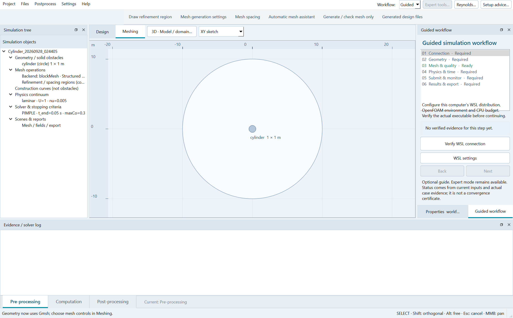
Polygon solid: click vertices and press Enter/right click to close. It is a genuine Gmsh cut/extruded solid; open Line/Polyline stays construction-only. Circle, rectangle and triangle support two clicks as well as legacy drag drawing. Esc cancels; self-intersections are rejected. Incompatible default O-grid switches to Gmsh unless a manual block override must first be reviewed; geometry Undo restores the earlier method.
| Backend | Methods | Actual inputs |
|---|---|---|
| blockMesh | Structured cylinder O-grid / partitioned box | system/blockMeshDict → constant/polyMesh |
| Gmsh → gmshToFoam | Triangle/prism; quad-dominant/prism; tetrahedral | geometry.msh / geometry.brep; mesh_generator_source.py → constant/polyMesh |
Files menu is available on every workspace. Generated design files builds actual drafts with 0/U,p and model fields, all system/constant dictionaries, mesh input and source snapshot. The OpenFOAM run-directory browser also exposes all older cases without a queue selection. Selected case shows all actual polyMesh, saved fields and logs read-only; Application source shows every software source file. Draft blockMeshDict edits can be saved as explicit project overrides and actually used by blockMesh. Program source/actual cases are protected in this browser; the existing inactive-case dictionary editor remains available.
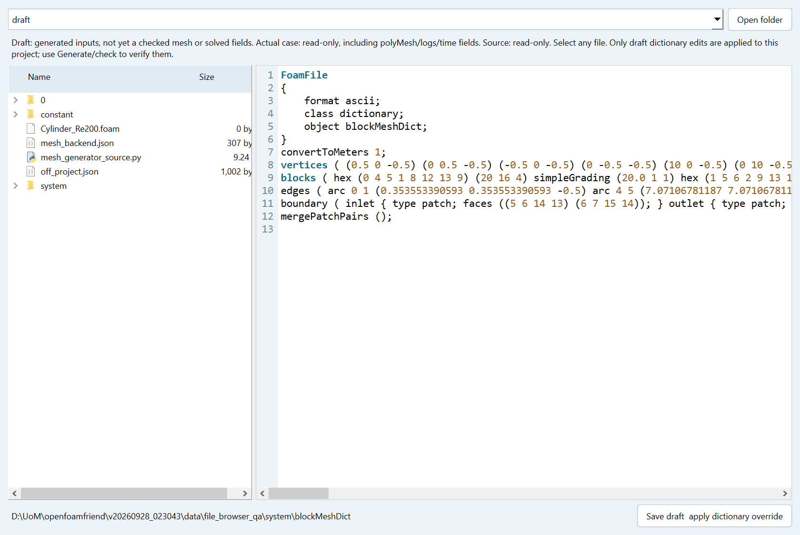
Draft inputs are not a checked mesh or solved result. Gmsh BREP is geometry, not a mesh; MSH is the generated mesh. Quad-dominant recombination does not promise all quads. Manual planar multiblock topology is implemented in 0.14; general 3D CAD booleans are not implemented. 3D drawing remains planar extrusion. Manual block code can express custom topology but still must pass checkMesh.
Actual mouse/manual-block/polygon QA evidence · Seven quick tutorials and seven starters
0.12 · Actual custom-polygon solve
A pentagonal obstacle drawn as a planar solid was actually extruded and meshed with Gmsh, converted with gmshToFoam, solved with four MPI ranks and exported as genuine CSV/MAT/PNG/GIF. This short run verifies new geometry integration; it does not qualify wake statistics.
| Quantity | Actual result |
|---|---|
| Cells | 6600 |
| Ranks | 4 |
| Simulated time / s | 0.05 |
| Genuine saved frames | 3 |
| Max skewness | 0.2692664925 |
| Max non-orthogonality / ° | 22.29907157 |
| Max observed Co | 0.02413486251 |
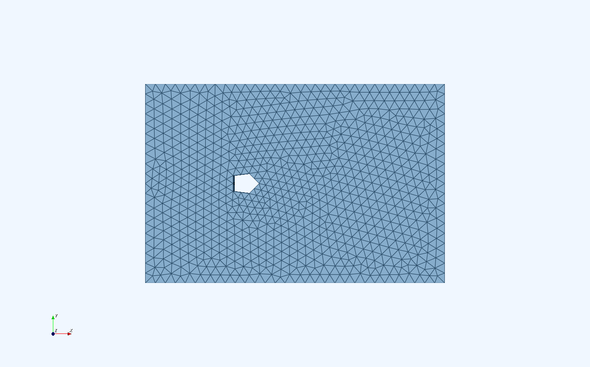
Full measured polygon evidence · Actual input save/rebuild and bilingual UI tests